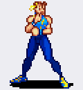
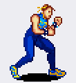

| Fila | GIF | Animación | Frames | Bucle | Activos | En el aire | Tamaño | Nota de uso |
|---|---|---|---|---|---|---|---|---|
| — | Stance completo (filas 1-3) | 35 | 🔁 sí | — | — | 55×26 | Las tres filas seguidas: 35 frames de bucle. | |
| 01 | Stance · parte 1 | 16 | 🔁 sí | — | — | 57×26 | Con las filas 2 y 3 forma el bucle completo del stance. | |
| 02 |  |
Stance · parte 2 | 7 | 🔁 sí | — | #2 | 55×31 | Segunda parte del mismo bucle. |
| 03 |  |
Stance · parte 3 | 12 | 🔁 sí | — | — | 56×35 | Tercera parte; al acabar vuelve a la fila 1. |
| 04 |  |
Caminar adelante | 6 | 🔁 sí | — | — | 60×34 | Ciclo de 6 frames. |
| 05 |  |
Caminar atras | 6 | 🔁 sí | — | — | 59×34 | Mismo patron dibujado al reves en la hoja; 6 frames. |
| 06 |  |
Patada fuerte (de pie) | 7 | no | #3 | — | 57×33 | La pierna sube por encima de la cadera. |
| 07 |  |
Puno fuerte (de pie) | 6 | no | #3 | — | 53×46 | Brazo extendido al frente. |
| 08 |  |
Puno debil (de pie) | 6 | no | #2, #4 | — | 57×46 | Misma idea que el fuerte pero mas corto. |
| 09 |  |
Patada debil (de pie) | 5 | no | #3 | — | 61×32 | Rodilla y extension corta. |
| 10 |  |
Especial ↓ ↓↘ → + patada | 7 | no | #5, #7 | #6 | 45×29 | La patada girada con el efecto en el pie. |
| 11 |  |
Especial proyectil | 3 | no | — | — | 54×54 | El proyectil NO esta dibujado: hay que completarlo con la chispa de Voltia. |
| 12 |  |
Speed kick | 9 | no | #3, #8 | — | 61×32 | Patada rapida repetida (machaque de boton). |
| 13 |  |
Salto en el sitio | 10 | no | — | #4, #5, #6, #7, #8 | 36×20 | Los pies se separan del suelo y vuelven. |
| 14 |  |
Salto adelante | 11 | no | — | #4, #5, #6, #7, #8 | 32×20 | Invertido sirve de salto atras. |
| 15 |  |
Patada adelante-abajo + voltereta atras | 13 | no | #8, #9, #10 | #6, #7, #8, #9, #10 | 32×20 | Sube caminando por el pecho del rival y cae con voltereta. |
| 16 |  |
Salto + puno (debil o fuerte) | 11 | no | #6 | #4, #5, #6, #7, #8 | 38×20 | Misma animacion para los dos botones; cambia el impacto y el dano. |
| 17 |  |
Salto + patada (debil o fuerte) | 10 | no | #7 | #4, #5, #6, #7 | 53×20 | Misma animacion para los dos botones; cambia el impacto y el dano. |
| 18 |  |
Puno fuerte agachada de pie: #1, #11, #12 |
12 | no | #6 | — | 46×46 | Los frames de levantarse se reutilizan para pasar de stance a agachada y al reves. |
| 19 |  |
Patada fuerte agachada | 6 | no | #3 | — | 43×37 | Sale desde el suelo. |
| 20 |  |
Patada debil agachada | 5 | no | #2 | — | 32×34 | Extension corta. |
| 21 |  |
Puno debil agachada | 6 | no | #3 | — | 45×46 | Golpe corto desde agachada. |
| 22 |  |
Defensa / onda de choque | 8 | 🔁 sí | — | — | 60×46 | Guarda normal; con impactos grandes genera la onda. Tambien arranca el super. |
| 23 |  |
Super · esfera envolvente | 6 | no | — | — | 57×48 | La esfera no esta dibujada; los frames son el arranque del super. |
| 24 |  |
Derribo y recuperacion | 11 | no | — | #1, #2, #3, #4, #5 | 24×34 | Se usan frames distintos segun la altura de la caida. |
Frame data de los golpes
Los frames activos salen de medir el alcance del brazo o de la pierna, no de mirar la foto. Arranque = frames antes de la extensión; activo = frames con el miembro extendido; recuperación = frames hasta volver a la guardia.
| Fila | Animación | Frames | Arranque | Activo | Recuperación | Total a 12 fps | Extiende |
|---|---|---|---|---|---|---|---|
| 06 | Patada fuerte (de pie) | 7 | 2 | 1 | 4 | 583 ms | brazo |
| 07 | Puno fuerte (de pie) | 6 | 2 | 1 | 3 | 500 ms | brazo |
| 08 | Puno debil (de pie) | 6 | 1 | 2 | 3 | 500 ms | brazo |
| 09 | Patada debil (de pie) | 5 | 2 | 1 | 2 | 417 ms | brazo |
| 10 | Especial ↓ ↓↘ → + patada | 7 | 4 | 2 | 1 | 583 ms | pierna |
| 12 | Speed kick | 9 | 2 | 2 | 5 | 750 ms | brazo |
| 15 | Patada adelante-abajo + voltereta atras | 13 | 7 | 3 | 3 | 1083 ms | brazo |
| 16 | Salto + puno (debil o fuerte) | 11 | 5 | 1 | 5 | 917 ms | brazo |
| 17 | Salto + patada (debil o fuerte) | 10 | 6 | 1 | 3 | 833 ms | brazo |
| 18 | Puno fuerte agachada | 12 | 5 | 1 | 6 | 1000 ms | brazo |
| 19 | Patada fuerte agachada | 6 | 2 | 1 | 3 | 500 ms | brazo |
| 20 | Patada debil agachada | 5 | 1 | 1 | 3 | 417 ms | brazo |
| 21 | Puno debil agachada | 6 | 2 | 1 | 3 | 500 ms | brazo |
Ojo: los 12 fps son la velocidad del GIF de revisión, no la del juego. Lo que sí es del dibujo: cuántos frames hay y en cuál se extiende.
Lo que la hoja no trae y hay que completar
- Fila 11, proyectil: el proyectil no está dibujado. La animación son solo 3 frames (guardia, palmas al frente, guardia). Se completa con la chispa de Voltia.
- Fila 23, super: la esfera que envuelve al personaje tampoco está dibujada; estos frames son el arranque.
- Fila 22, defensa: la onda de choque de los golpes grandes va aparte; aquí solo está la guarda.
- Filas 16 y 17: una sola animación para débil y fuerte. El daño y el impacto se diferencian por código, no por frames.
Frames reutilizables (lo que dijiste)
- Fila 18: los frames de pie (
#1, #11, #12) son el levantarse, y sirven para pasar de stance a agachada y al revés. No hay que dibujar una transición aparte. - Fila 14: el salto adelante, invertido, es el salto atrás.
- Fila 24: el derribo se monta escogiendo frames según la altura de la que venga la caída; no es una animación única.
- Filas 1-3: el bucle del stance se corta en tres trozos de hoja, pero es una sola animación de 35 frames.
Cómo está cortado (y por qué antes fallaba)
Mi corte anterior separaba por huecos de fondo y daba 23 filas: no cuadraba con tus 24. El motivo es que la banda 3 llevaba dos animaciones (caminar adelante y caminar atrás, 6 + 6 frames). Ahora la banda 3 se parte en dos y el resto va una fila por banda, lo que da las 24 exactas.
El retrato de la primera fila se descarta: es más alto que cualquier frame y no es animación. Los frames en el aire se detectan porque su borde inferior queda por encima de la línea de suelo de la fila.
Frames sueltos en voltia/nuevo/chunli/rows/NN_nombre/, GIF en
gif/ y todos los datos en rows.json.